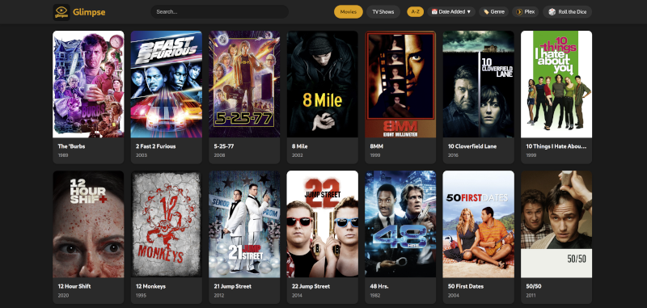

Glimpse into your media

Most of the tooling around self-hosted media servers is aimed at the people running them. Dashboards, request systems, analytics, transcoder tweaks. All useful, all important, but none of it really answers a much simpler question that comes up all the time: what's actually in there? When a friend asks if you have a particular show, or when you sit down and can't decide what to watch, you want a clean, fast way to just look at your library. That's the problem Glimpse is built around.
Glimpse is a self-hosted web app that turns your Plex, Jellyfin, or Emby library into a browsable showcase. It pulls metadata and artwork from your server, presents it in a responsive interface that works on phones and desktops alike, and gets out of the way. It's a viewer, not a player, and that distinction is the whole point.
Why a viewer instead of a player?
There's a use case that comes up constantly with home media servers and isn't well served by the official clients: showing people what you have without giving them access to the server itself. You don't necessarily want to hand out Plex accounts to everyone who's curious about your library. You might also just want a fast, low-friction way to check whether a movie is already there before going looking for it.
Glimpse handles both of those by separating "browsing" from "watching." It shows the posters, the descriptions, the cast, the genres, even the trailers. What it doesn't do is stream the actual content. That's a feature, not a limitation. It means you can put it on your network, share it with family, or even expose it through a reverse proxy without worrying about playback access or auth headaches around the underlying server.
Multi-server, one interface
The thing that makes Glimpse stand out from a lot of similar projects is that it isn't tied to one platform. It works with Plex, Jellyfin, or Emby, and it works with all of them at once if that's your setup. If you've migrated between platforms, run more than one for different parts of your collection, or just like keeping options open, Glimpse gives you a single place to see everything.
When you have multiple servers configured, a dropdown lets you switch between them with a click. The interface even reskins itself based on which server you're viewing: orange and yellow for Plex, blue for Jellyfin, green for Emby. It's a small touch, but it makes the context clear without any thought.
What you can actually do with it
The feature list is built around browsing and discovery rather than management:
- A clean grid of poster art for movies and TV shows, with details a click away
- Search across your libraries to quickly find a specific title
- Genre filters and sorting by title or by date added
- A "Roll the Dice" feature that picks something at random when you can't decide
- Detailed views with cast, genre, and description information
- Embedded movie trailers, so you can preview before committing
- Library exclusion, so you can keep certain libraries out of the public-facing view
- Installable as a Progressive Web App, so it can sit on a phone home screen and behave like a native app
The "Roll the Dice" option deserves a special mention. Anyone who's spent twenty minutes scrolling a media library trying to pick something already knows why this feature exists. Sometimes the best thing a piece of software can do is make a decision for you.
Quietly efficient under the hood
Glimpse runs as a Docker container, fetches data from your servers on a schedule you control, and caches the artwork locally so it isn't hammering your media servers every time someone loads a page. It also uses MD5 checksums to avoid re-downloading images that haven't changed, which keeps update runs fast and gentle on bandwidth.
The library exclusion feature is more useful than it might sound at first. Most people running a media server have at least one library they don't want sitting on the front page when a friend pulls Glimpse up on their phone. Excluding by name or ID gives you the public-facing browse experience without the public-facing surprise.
Access is read-only at every layer. Glimpse never writes anything back to your media server. The worst it can do is fail to load a poster.
Where it fits
If you only ever use your media server alone, from your own clients, Glimpse may not change much for you. But if you share with anyone, or if you've ever found yourself describing what's on your server in a text message instead of just sending a link, it solves a problem you've been working around. It also fills a gap that the official clients don't really try to fill: a lightweight, shareable, beautiful index of what you've collected, decoupled from playback.
It's the kind of tool that turns "let me check if I have it" into something you can hand off, and that's surprisingly hard to come by.
Links
- Project on GitHub: jeremehancock/Glimpse
- Checkout out my Glimpse here: glimpse.vitaminsocks.com
AI Assistance Disclosure
This tool was developed with assistance from AI language models.